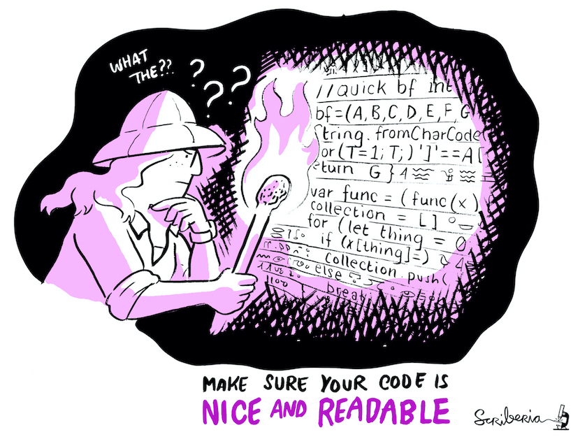

Code review?
- Viewed as an important practice in the software industry.
- Key step in contributing to most software projects
(gatekeeping).
- Many benefits
- Catch bugs
- Ensure quality standard
- Spread knowledge
- Training new developers
Not a peer review for code
- Code review throughout the research process:
- Frequent
- Informal
- Low stakes
- Commonly referred as “Modern Code Review” in the SE litterature.
Bachelli and Bird 2013
- Can be asynchronous (GitHub’s Pull Requests) or synchronous (in
person chat).
Two contexts
- Individual developers writing their own specific software.
- Developers collaboratin on a common codebase.
- Code review as gatekeeping.
Why code reviews
Modern Code Review: A Case Study at Google (Sadowski 2018)
Expectations, Outcomes, and Challenges of Modern Code Review:
(Bacchelli and Bird 2013)
Code Reviewing in the Trenches: Understanding Challenges and Best
Practices (McLeod et al 1017)
Code review by and for scientists
Code review for software quality 1
- Defects
- Code improvements
Code review for software quality 2
Understandability matters

img
Oftentimes source code is the only available docs..
Knowledge transfer
Code review is a peer learning activity.
Spread of good practices.
Homogeneisation of styles and practicess across group.
filepath = “/my/own/specific/path/” + “data.csv”
from pathlib import Path # … filepath = datadir_path /
Path(datafile)
Better team awareness
Even if not working on exactly the same project, regular
code reviews enable awareness of what others are doing.
- Continuous knowledge exchange
- Enhanced collaboration
- Longer term resilience of project(s) (Bus factor!)
Code review is challenging
A lot of content available, but what about research
software?
Code review is time and energy
It’s a fact.
Two complementary courses of actions:
- Acknowledge code review as a worthy investement:
- “middle-term” benefits for individuals.
- Short and long term benefits for collectives.
- Regularly reflect process and follow good practices.
Large return on investment
Being protective about code
There can be some unhealthy competition going on.
A large number of researchers feel shy about their coding
practices:
- Lack of training.
- Other priorities, often systemic (e.g. funding).
- Why would I share my code if nobody else does?
Code review can turn the tide by putting software (back?) at the
heart of scientific process.
Strong heterogeneity among team members
- Experience.
- Skills (e.g. programming languages).
- Interest & motivation.
Finding reviewers
What about “lone coders”?
Bad experiences
Code review can lead both to inclusion and exclusion.
Dual nature: both technical and
social practice.
Bad experience 2
Most common code review parasites are:
- Irrelevant feedback.
- Petty arguments decoupled from overall scientific goal.
- Power struggles.
These must be and active effort to keep these under control. Similar
to technical debt.
A bad reviewer tries to force their preference on you. A good code
reviewer makes your code confrom to certain principles, but not
opinion.
Lack of guidelines
Where do I we start?
Code review good practices
- Most good practices from software engineering industry are
applicable.
- Some of them for slightly different reasons
- The following is an account of my personal experience and
discussions with colleagues - not evidence-based conclusions.
Short meetings
3 times 30’ instead of one time 90’
- Fit snuggly in the diary.
- Doesn’t feel like a big commitment.
- Code review can be a very demanding activity.
Engage with the review
It’s easy for participants to fall into “comfort mode”
- Author describes goes through code as if logic and implementation is
obvious.
- Reviewers assume author “know what they are doing”.
Reviewers should never stop questionning and trying
to understand the code
Authors should give reviewers opportunities to
interject.
Let authors be aware of their responsabilities
A code review’s success partly rests on the author’s shoulder.
- Choose a small piece of code.
- Provide a description of the purpose and structure of the code.
- Think ahead what reviewers will and will not be familiar with
- Specific libraries
- Specific domain knowledge
- Ensure minimum quality standard (e.g. style, naming)
Put yourself into your reviewer(s)’ shoes: what would you want to be
told if asked to review your code?
Let authors specify the feedback they are after
Feedback is likely to be more targeted and impactful.
I’m not happy with this loop
for i in `seq 1 $NUMOFFIG`
do
FIG=$(ls $IMDIR | head -n $i | tail -n 1)
echo " ${placeholderpath}/${FIG}" >> $FILE
done
I’m having to define a lot of classes that don’t do much, what do
you think of my design?
I don’t have any specific issue in mind, but I’m curious to see
whether or not you find it hard to to follow the code’s logic.
Define – and enforce – a scope
Example default scope: understandability
- Poor formatting.
- Obscure variable names.
- Complex conditionals.
- Long functions.
- Long parameter lists.
Design red flags
.
Performance sinks
.
Security concerns
.
Default scope can be overrriden at will.
Whether “it works” or not is irrelevant
Code review is not an evaluation of a finished product.
It is more rewarding to look at code that is WIP or causing
difficulties.
The only expectation is that code is readable by reviewers:
- Formatting, dead code, comments…
Overheard in the next meeting room
Author: This loop I wrote looks too complicated to me.
Reviewer: Hmmm yes. You could just use a pipe and
xargs.
Author: What’s xargs?
Reviewer: It’s basically mapping a command over a set of
inputs.
Author: …
Reviewer: Alhtough you could also do the same thing with
sed.
Author: I have no idea what you’re talking about
All feedback isn’t helpful
At least for now.
Esp. reviewers with more programming experience/enthusiasm must be
careful not to overwhelm beginners.
Critique the code, not the programmer
Feedback can be hard to stomach
You clearly made little effort in naming things…
You should name this differently
I think this name is misleading
The art of giving feedback
- Own you opinions.
- Make it about the code.
- Be specific.
- Suggest an alternative.
I think this function’s purpose would be much clearer if it was
given a more explicit name.. perhaps
apply_bwd_trasform?
Define (and refine) a policy
- Well defined process
- Default scope
- Moderator(s)
- Code of conduct
- Conflict resolution
A culture of openess and collaboration
- Collective ownership of research project, teamwork Chris Woods’
point about making research more of a team effort.